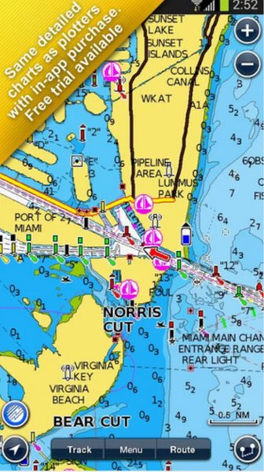
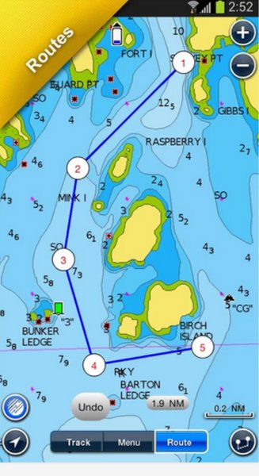
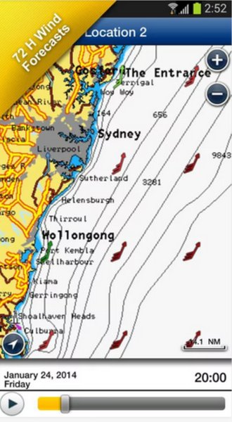
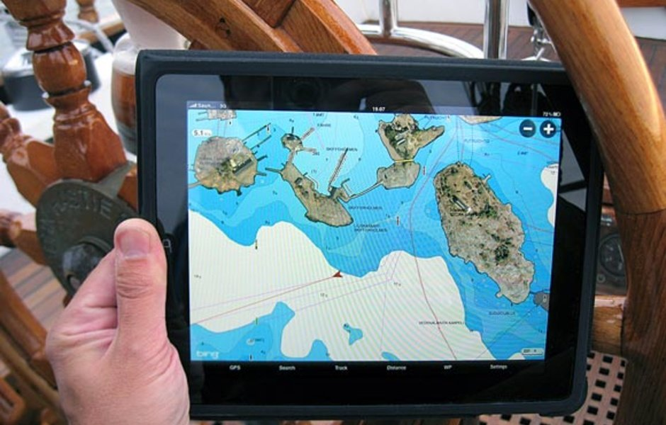
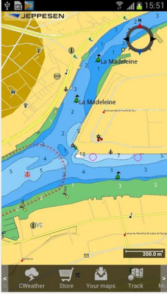
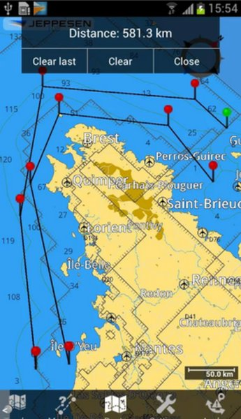
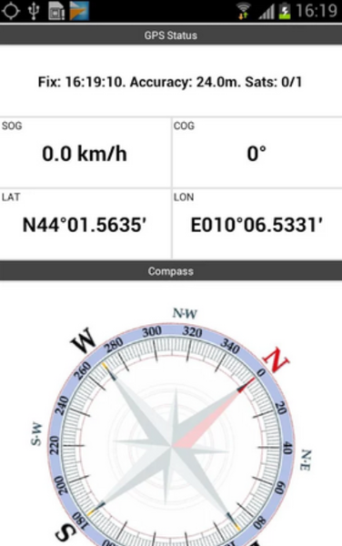
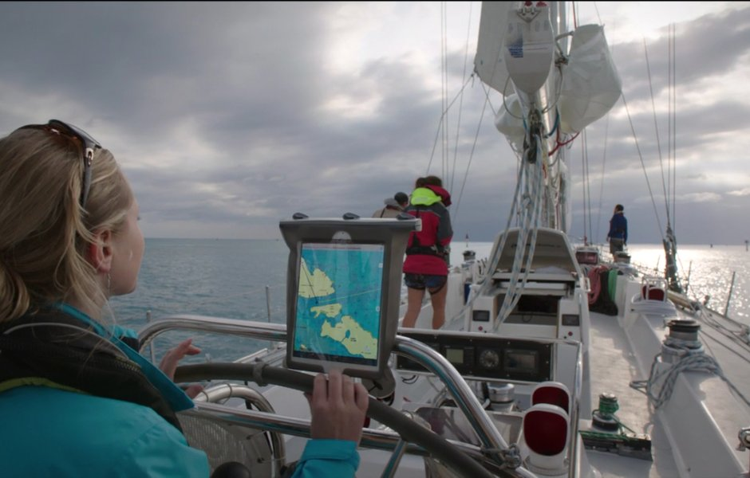
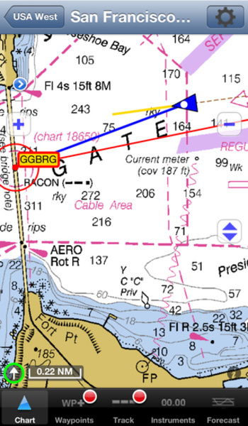
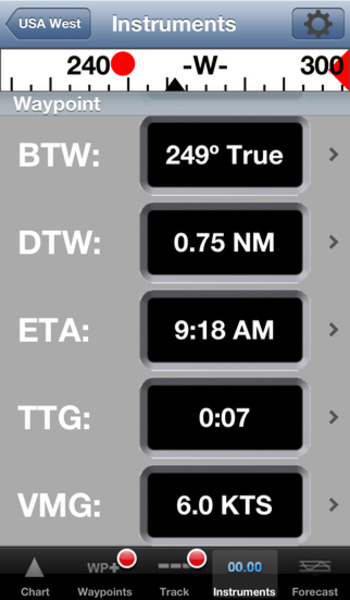

В 2013 году верфь McConaghy boats спустила на воду 140-футовый тримаран Adastra. Суперяхта, больше напоминающая звездолет из Star Wars, получила несколько призов на престижной ShowBoats Design Awards в Монако. Одной из наград было отмечено оригинальное техническое решение: яхтой можно было управлять на расстоянии до 50 метров с помощью планшета iPad. Пока это единичный случай, но он хорошо показывает тенденцию — мобильные устройства захватили не только рынок персональных компьютеров и Интернет, они стали частью яхтенной жизни.
Даже если вы не владелец мегаяхты, с помощью обширного ассортимента мобильных приложений вы можете сделать управление лодкой комфортным и безопасным, используя iPad или устройство на Android как навигатор, компас, метеостанцию и многое другое. Мы выбрали три навигационных приложения, на которые стоит обратить внимание.
Navionics
Карты Navionics — одни из наиболее популярных векторных карт, используемых в традиционных картплоттерах. Одноименное приложение дает возможность использовать эти карты на мобильном устройстве для навигации и построения маршрута. Navionics имеет приличный уровень детализации. Карта масштабируется классическим движением двумя пальцами. Масштаба достаточно, чтобы изучить места для стоянки в приглянувшейся марине.
 

В приложении можно отследить и сохранить текущий маршрут или составить новый, с отметками в точках стоянок, и поделиться им с сотоварищами по email или Facebook.
Удобная фишка — возможность добавлять на карты собственные заметки и новые объекты.
Это позволило «Навиониксу» собрать приличную базу данных, которая постоянно обновляется, был бы Интернет. Однако все правки на совести пользователей, Navionics не модерирует информацию, и путаница в этом случае неизбежна. Например, десятки названий одной марины с разным написанием или ошибки с ее расположением. В поиске нет выборки по рейтингу, по наличию отзывов или предоставляемым сервисам.

Кроме пользовательских заметок, приложение показывает сводки погоды, направления ветров и карту приливов-отливов. Погодный сервис реализован неплохо, но его данных не всегда хватает. С другой стороны для погодных дел есть свои, узкоспециализированные утилиты.
Navionics — платное приложение. Его стоимость колеблется от 300 до 2600 рублей в зависимости от выбранного региона.
Позитивный момент: покупая карты, вы получаете постоянные обновления на протяжении всего времени использования.
Plan2Nav
Plan2Nav — приложение на основе векторных карт С-Map, как и Navionics часто используемых в традиционных картплоттерах. Как и «Навионикс», Plan2Nav позволяет строить и сохранять маршруты. На карты проецируется цифровой компас, который показывает скорость относительно грунта, курс относительно грунта, широту и долготу. Также Plan2Nav показывает прогноз погоды для определенной местности, скорость и направление ветра, высоту волны.
 

Между поклонниками Navionics и C-Map идут непримиримые споры о том, какие же карты точнее.
Правда, как всегда, лежит где-то посередине: какие-то регионы лучше описаны в C-Map, какие-то — в Navionics. Принять решение здесь вам поможет лишь собственный опыт.
Поэтому пробуйте: у Navionics есть бесплатная trial-версия приложения, а Plan2Nav в принципе бесплатна и идет вместе с картой мира. Векторные карты для отдельных регионов придется скачивать дополнительно. Цены на них варьируются от $19,99 до $37,99.
Заодно оцените удобство интерфейса приложений. Кому-то интерфейс Plan2nav не по душе (он и правда более сложен): маленькие неудобные иконки и неинтуитивность управления, из-за которой приходится долго разбираться, чтобы заставить приложение работать как нужно.
iNavX
По мнению журнала Practical Sailor, это одно из лучших навигацонных приложений для iPad (но также и самое дорогое). «Я использую iNavX постоянно, получаю отличную индивидуальную поддержку и рекомендую это приложение для любой круизной лодки», — пишет пользователь cruisersforum.com.

По цене $50 iNavX поставляется без карт. Их нужно скачивать отдельно. Приложение работает и с растровыми картами (в частности, с бесплатными NOAA с полным охватом США), и с векторными (с тем же Navionics), таким образом решая извечный спор пользователей GPS-навигации о том, что лучше — растр или вектор. Векторные карты придется покупать через аккаунт на X-Traverse.com.
Интерфейс iNavX очень напоминает классический автономный картплоттер — он интуитивно понятен и прост.
 
Одна из ключевых особенностей iNavX — это возможность отображать данные с различных измерительных приборов лодки (датчиков, флюгеров, анемометров). Чтобы программа распознала эту информацию, данные должны быть преобразованы в сообщения текстового протокола связи морского оборудования NMEA 0183 и затем переданы по Wi-Fi.
Преобразовать данные можно разными способами, например, с помощью установленной на ноутбук программы MacENC или специального оборудования (iMux от Brookhouse). Таким же образом можно подключить iPad, iPhone или iPod к AIS.